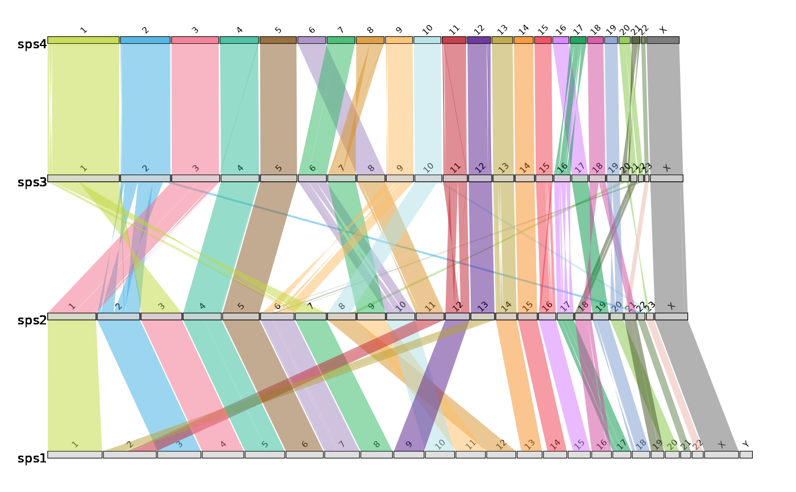

Draw Linear Synteny Plots
Usage
draw.linear(
output,
sizefile,
...,
directory = NULL,
fileformat = "png",
colours = colours.default,
w = 13,
h = 5,
opacity = 0.5
)Arguments
- output
output file name
- sizefile
Chromosome Size file
- ...
synteny files (any number of alignment files can be entered)
- directory
string containing file path to chosen directory to save image file
- fileformat
output file format specified using the format
fileformat = "pdf"(the default is "png")- colours
concatenated string of chromosome IDs and assigned colours if desired using the format
colours = c("1" = "red", "2" = "blue", "3" = "green", "X" = "grey")if the no colours are assigned default values will be used- w
width of output image using the format
w = 13(default)- h
height of output image using the format
h = 5(default)- opacity
opacity of syntenic bands using the format
opacity = .5(default)
Details
This function draws linear synteny plots.
It requires:
The desired output file name;
Tab separated file of all chromosome, scaffold, or contig lengths and the species identifier, in order from first target species in the alignment files followed by the first reference species in the alignment files – top of file – to the last target species and reference species in the alignment files – end of file. in this format: chromosome ID, chromosome length, species identifier
files containing the syntenic blocks - one file per alignment, in order from first target/reference (most recent species pairwise alignment in ancestral reconstruction data) alignment file to last target/reference (ancestor pairwise alignment in ancestral reconstruction data) alignment file following this format: reference chromosome, reference start position, reference end position, target chromosome, target start position, target end position, orient, reference species identifier, target species identifier
Please separate files by tab and ensure any species identifiers used between length and alignment files are matching (same identifiers and caseing)
There are optional parameters for some customization of this function:
The format for saving the image i.e. png or pdf can be altered by inputting:
fileformat = "pdf"(the default value is "png")The colour of the synteny bands can be altered by inputting a concatenated string of chromosome IDs with assigned colour values which can be found with R colour Pallette e.g.
colours = c("1" = "red", "2" = "blue", "3" = "green","4" = "orange", "5" = "purple","X" = "grey")if no colours are assigned default values will be used but colours MUST be assigned to all chromosomesThe width of the image created can be changed by inputting:
w = 13(default)The height of the image created can be changed by inputting:
h = 5(default)The opacity of the ribbons can be changed by inputting:
opacity = .5(default)The directory where the image file should be saved, as default the image is saved to temporary directory, change by inputting:
directory = "path/to/directory"
The function works using the chromosome length file to order the Y axis and provide chromosome lengths to draw chromosome ideograms and the alignment files provides coordinates to draw the alignment bands between ideograms
Example: draw.linear("outputname", "example_lengths.txt", "example_alignment_1.txt", "example_alignment_2.txt", "example_alignment_3.txt", directory = "path/to/directory", fileformat = "pdf")
Examples
# Create objects containing file paths to external dataset
# (see vignette to follow examples with personal data)
length.file <- system.file("extdata", "example_lengths.txt", package = "syntenyPlotteR")
file1 <- system.file("extdata", "example_alignment_1.txt", package = "syntenyPlotteR")
file2 <- system.file("extdata", "example_alignment_2.txt", package = "syntenyPlotteR")
file3 <- system.file("extdata", "example_alignment_3.txt", package = "syntenyPlotteR")
# -----------------------------------------------------------------------------------
# Run draw.linear function
# To run example and save file to working directory
# add directory parameter and set working directory
# To run example with personal data see vignette
draw.linear("outputName", length.file, file1, file2, file3, fileformat = "pdf")
#> Saving linear image to /tmp/RtmpoDfgwC
